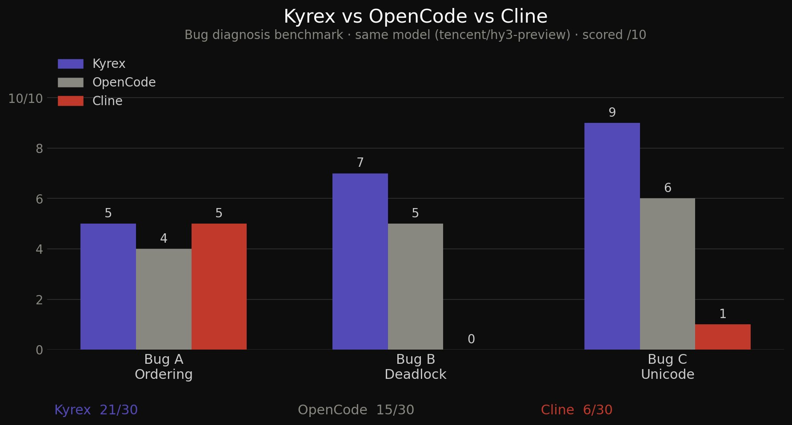

Open-source coding agent
See the diff.
Then decide.
Kyrex can edit files and run commands in your project. Review changes before they’re applied and see what ran.
Terminal · Linux and WSL2Try network requests up to three times.
client.py- return send(request)+ return send_with_retry(request, attempts=3)
Awaiting review
1 file · +1 / −1
01 / Workflow
Review the work.
Preview file edits
Kyrex shows a unified diff for proposed edits. Approve or reject the change from the review.
Inspect tool calls
Use the execution timeline to see which tools ran, what they returned, and where a run stopped.
Set a review window
For repeatable tasks in the terminal, /autoapprove can apply edits after a configurable delay.
02 / Models
Choose your model.
Bring your own API key for OpenAI, Anthropic, OpenRouter, OpenCode, or another OpenAI-compatible endpoint. You can also connect to a local model through Ollama.
03 / Install
Start in your terminal.
Install on Linux or WSL2.
curl -fsSL https://raw.githubusercontent.com/kp84-hub/kyrex/main/install.sh | bash
Run kx --setup to choose a provider and model, then run kx in your project directory.
Watch the Kyrex demo
See benchmark results

